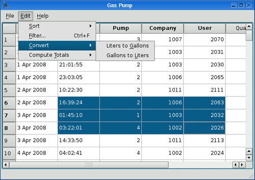
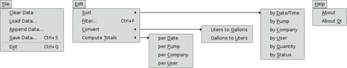
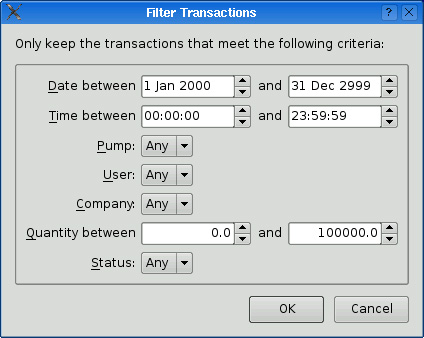

|
|
Sometimes we use GUI applications to manipulate data sets in the same way each time. If the manipulation consists of invoking many menu options, or interacting with a dialog, not only does it become tedious but there is a risk that on some occasions we may miss steps, or transpose the order of a couple of steps—and perhaps not realize that a mistake has been made. One way to make things easier for users is to allow them to write scripts to perform sequences of actions automatically.
In this section, we will present a GUI application that offers a command-line option, -script, that lets the user specify a script to execute. The application will then start up, execute the script, and terminate, with no GUI appearing at all.
The application we will use to illustrate this technique is called Gas Pump. It reads in lists of transactions recorded by a trucker gas station's pumps and presents the data in a tabular format, as shown in Figure 22.5.

Each transaction is recorded by date and time, and by the pump, the quantity taken, the company ID and user ID of the trucker, and the transaction's status. The Gas Pump application can be used to manipulate the data in quite sophisticated ways, sorting it, filtering it, computing totals, and converting between liters and gallons.
The Gas Pump application supports transaction data in two formats: "Pump 2000", a plain text format with extension .p20, and "XML Gas Pump", an XML format with extension .gpx. The application can load and save in both formats, so it can be used to convert between them, simply by loading in one format and saving in the other.
The application is supplied with four standard scripts:
onlyok.js removes all transactions whose status is not "OK".
p20togpx.js converts a Pump 2000 file to the XML Gas Pump file format.
The scripts are invoked using the -script command-line option followed by the name of the script, and then the name of the files to operate on. For example:
gaspump -script scripts/toliters.js data/2008q2.p20
Here, we run the toliters.js script from the scripts subdirectory on the 2008q2.p20 Pump 2000 data file from the data subdirectory. The script converts all the quantity values from gallons to liters, changing the file in-place.
The Gas Pump application is written just like any other C++/Qt application. In fact, its code is very similar to the Spreadsheet example from Chapters 3 and 4. The application has a QMainWindow subclass called PumpWindow that provides the application's framework, including its actions and menus. (The menus are shown in Figure 22.6.) There is also a custom QTableWidget called PumpSpreadsheet for displaying the data. And there is a QDialog subclass, FilterDialog shown in Figure 22.7, that the user can use to specify their filter options. Because there are a lot of filter options, they are stored together in a class called PumpFilter. We will very briefly review these classes, and then we will see how to add scripting support to the application.
class PumpSpreadsheet : public QTableWidget
{
Q_OBJECT
Q_ENUMS(FileFormat Column)
public:
enum FileFormat { Pump2000, GasPumpXml };
enum Column { Date, Time, Pump, Company, User, Quantity, Status,
ColumnCount };
PumpSpreadsheet(QWidget *parent = 0);
public slots:
void clearData();
bool addData(const QString &fileName, FileFormat format);
bool saveData(const QString &fileName, FileFormat format);
void sortByColumn(Column column,
Qt::SortOrder order = Qt::AscendingOrder);
void applyFilter(const PumpFilter &filter);
void convertUnits(double factor);
void computeTotals(Column column);
void setText(int row, int column, const QString &text);
QString text(int row, int column) const;
private:
...
};


The PumpSpreadsheet holds the data and provides the functions (which we have made into slots) that the user can use to manipulate the data. The slots are accessible through the user interface, and will also be available for scripting. The Q_ENUMS() macro is used to generate meta-information about the FileFormat and Column enum types; we will come back to this shortly.
The QMainWindow subclass, PumpWindow, has a loadData() function that makes use of some PumpSpreadsheet slots:
void PumpWindow::loadData()
{
QString fileName = QFileDialog::getOpenFileName(this,
tr("Open Data File"), ".",
fileFilters);
if (!fileName.isEmpty()) {
spreadsheet->clearData();
spreadsheet->addData(fileName, fileFormat(fileName));
}
}
The PumpSpreadsheet is stored in the PumpWindow as a member variable called spreadsheet. The PumpWindow's filter() slot is less typical:
void PumpWindow::filter()
{
FilterDialog dialog(this);
dialog.initFromSpreadsheet(spreadsheet);
if (dialog.exec())
spreadsheet->applyFilter(dialog.filter());
}
The initFromSpreadsheet() function populates the FilterDialog's comboboxes with the pumps, company IDs, user IDs, and status codes that are in use in the current data set. When exec() is called, the dialog shown in Figure 22.7 pops up. If the user clicks OK, the FilterDialog's filter() function returns a PumpFilter object that we pass on to PumpSpreadsheet::applyFilter().
class PumpFilter
{
public:
PumpFilter();
QDate fromDate;
QDate toDate;
QTime fromTime;
QTime toTime;
QString pump;
QString company;
QString user;
double fromQuantity;
double toQuantity;
QString status;
};
The purpose of PumpFilter is to make it easier to pass around filter options as a group rather than having ten separate parameters.
So far, all we have seen has been unsurprising. The only barely noticeable differences are that we have made all the PumpSpreadsheet functions that we want scriptable into public slots, and we have used the Q_ENUMS() macro. To make Gas Pump scriptable, we must do two more things. First, we must change main.cpp to add the command-line processing and to execute the script if one is specified. Second, we must make the application's functionality available to scripts.
The QtScript module provides two general ways of exposing C++ classes to scripts. The easiest way is to define the functionality in a QObject class and to expose one or more instances of that class to the script, using QScriptEngine::newQObject(). The properties and slots defined by the class (and optionally by its ancestors) are then available to scripts. The more difficult but also more flexible approach is to write a C++ prototype for the class and possibly a constructor function, for classes that need to be instantiated from the script using the new operator. The Gas Pump example illustrates both approaches.
Before we study the infrastructure used to run scripts, let us look at one of the scripts that is supplied with Gas Pump. Here is the complete onlyok.js script:
if (args.length == 0)
throw Error("No files specified on the command line");
for (var i = 0; i < args.length; ++i) {
spreadsheet.clearData();
if (!spreadsheet.addData(args[i], PumpSpreadsheet.Pump2000))
throw Error("Error loading Pump 2000 data");
var filter = new PumpFilter;
filter.status = "OK";
spreadsheet.applyFilter(filter);
if (!spreadsheet.saveData(args[i], PumpSpreadsheet.Pump2000))
throw Error("Error saving Pump 2000 data");
print("Removed erroneous transactions from " + args[i]);
}
This script relies on two global variables: args and spreadsheet. The args variable returns the command-line arguments supplied after the -script option. The spreadsheet variable is a reference to a PumpSpreadsheet object that we can use to perform various operations (file format conversion, unit conversion, filtering, etc.). The script also calls some slots on the PumpSpreadsheet object, instantiates and initializes PumpFilter objects, and uses the PumpSpreadsheet::FileFormat enum.
We begin with a simple sanity check, and then for each file name listed on the command line we clear the global spreadsheet object and attempt to load in the file's data. We assume that the files are all in Pump 2000 (.p20) format. For each successfully loaded file, we create a new PumpFilter object. We set the filter's status property and then call the PumpSpreadsheet's applyFilter() function (which is accessible because we made it a slot). Finally, we save the updated spreadsheet data back to the original file, and output a message to the user.
The other three scripts have a similar structure; they are included with the book's source code.
To support scripts such as the onlyok.js script, we need to perform the following steps in the Gas Pump application:
|
1.
|
Detect the -script command-line
option.
|
|
2.
|
Load the specified script file.
|
|
3.
|
Expose a PumpSpreadsheet instance to
the interpreter.
|
|
4.
|
Expose the command-line arguments to the
interpreter.
|
|
5.
|
Expose the FileFormat and
Column enums to the interpreter.
|
|
6.
|
Wrap the PumpFilter class so that its
member variables can be accessed from the script.
|
|
7.
|
Make it possible to instantiate
PumpFilter objects from the script.
|
|
8.
|
Execute the script.
|
The relevant code is located in main.cpp, scripting.cpp, and scripting.h. Let's begin with main.cpp:
int main(int argc, char *argv[])
{
QApplication app(argc, argv);
QStringList args = QApplication::arguments();
if (args.count() >= 3 && args[1] == "-script") {
runScript(args[2], args.mid(3));
return 0;
} else if (args.count() == 1) {
PumpWindow window;
window.show();
window.resize(600, 400);
return app.exec();
} else {
std::cerr << "Usage: gaspump [-script myscript.js <arguments>]"
<< std::endl;
return 1;
}
}
The command-line arguments are accessible through the QApplication::arguments() function, which returns a QStringList. The first item in the list is the application's name. If there are at least three arguments and the second argument is -script, we assume that the third argument is a script name. In this case, we call runScript() with the script's name as its first argument and the rest of the string list as its second parameter. Once the script has been run, the application terminates immediately.
If there is just one argument, the application's name, we create and show a PumpWindow, and start off the application's event loop in the conventional way.
The application's scripting support is provided by scripting.h and scripting.cpp. These files define the runScript() function, the pumpFilterConstructor() support function, and the PumpFilterPrototype supporting class. The supporting function and class are specific to the Gas Pump application, but we will still review them since they illustrate some general points about making applications scriptable.
We will review the runScript() function in several parts, since it contains several subtle details.
bool runScript(const QString &fileName, const QStringList &args)
{
QFile file(fileName);
if (!file.open(QIODevice::ReadOnly)) {
std::cerr << "Error: Cannot read file " << qPrintable(fileName)
<< ": " << qPrintable(file.errorString())
<< std::endl;
return false;
}
QTextStream in(&file);
in.setCodec("UTF-8");
QString script = in.readAll();
file.close();
We start by reading the script into a QString.
QScriptEngine interpreter;
PumpSpreadsheet spreadsheet;
QScriptValue qsSpreadsheet = interpreter.newQObject(&spreadsheet);
interpreter.globalObject().setProperty("spreadsheet",
qsSpreadsheet);
Once we have the script in a QString, we create a QScriptEngine and a PumpSpreadsheet instance. We then create a QScriptValue to refer to the PumpSpreadsheet instance, and set this as a global property of the interpreter, making it accessible inside scripts as the spreadsheet global variable. All the PumpSpreadsheet's slots and properties are available through the spreadsheet variable to any script that cares to use them.
QScriptValue qsArgs = qScriptValueFromSequence(&interpreter, args);
interpreter.globalObject().setProperty("args", qsArgs);
The (possibly empty) args list of type QStringList that is passed to the runScript() function contains the command-line arguments the user wants to pass to the script. To make these arguments accessible to scripts, we must, as always, create a QScriptValue to represent them. To convert a sequential container such as QList<T> or QVector<T> to a QScriptValue, we can use the global qScriptValueFromSequence() function provided by the QtScript module. We make the arguments available to scripts as a global variable called args.
QScriptValue qsMetaObject =
interpreter.newQMetaObject(spreadsheet.metaObject());
interpreter.globalObject().setProperty("PumpSpreadsheet",
qsMetaObject);
In pumpspreadsheet.h, we defined the FileFormat and Column enums. In addition we also included a Q_ENUMS() declaration that specified these enums. It is rare to use Q_ENUMS() in general Qt programming; its main use is when we are creating custom widgets that we want to make accessible to Qt Designer. But it is also useful in a scripting context, since we can make the enums available to scripts by registering the meta-object of the class that contains them.
By adding the PumpSpreadsheet's meta-object as the PumpSpreadsheet global variable, the FileFormat and Column enums are made accessible to scripts. Script writers can refer to enum values by typing, say, PumpSpreadsheet.Pump2000.
PumpFilterPrototype filterProto;
QScriptValue qsFilterProto = interpreter.newQObject(&filterProto);
interpreter.setDefaultPrototype(qMetaTypeId<PumpFilter>(),
qsFilterProto);
Because ECMAScript uses prototypes rather than classes in the C++ sense, if we want to make a custom C++ class available for scripting, we must take a rather round-about approach. In the Gas Pump example, we want to make the PumpFilter class scriptable.
One approach would be to change the class itself and have it use Qt's meta-object system to export its data members as Qt properties. For the Gas Pump example, we have chosen to keep the original application intact and create a wrapper class, PumpFilterPrototype, that can hold and provide access to a PumpFilter, to show how it's done.
The call to setDefaultPrototype() shown earlier tells the interpreter to use a PumpFilterPrototype instance as the implicit prototype for all PumpFilter objects. This prototype is derived from QObject and provides Qt properties for accessing the PumpFilter data members.
QScriptValue qsFilterCtor =
interpreter.newFunction(pumpFilterConstructor,
qsFilterProto);
interpreter.globalObject().setProperty("PumpFilter", qsFilterCtor);
We register a constructor for PumpFilter so that script writers can instantiate PumpFilter. Behind the scenes, accesses to PumpFilter instances are mediated through PumpFilterPrototype.
The preliminaries are now complete. We have read the script into a QString, and we have set up the script environment, providing two global variables, spreadsheet and args. We have also made the PumpSpreadsheet meta-object available and provided wrapped access to PumpFilter instances. Now we are ready to execute the script.
interpreter.evaluate(script);
if (interpreter.hasUncaughtException()) {
std::cerr << "Uncaught exception at line "
<< interpreter.uncaughtExceptionLineNumber() << ": "
<< qPrintable(interpreter.uncaughtException()
.toString())
<< std::endl << "Backtrace: "
<< qPrintable(interpreter.uncaughtExceptionBacktrace()
.join(", "))
<< std::endl;
return false;
}
return true;
}
As usual, we call evaluate() to run the script. If there are syntax errors or other problems, we output suitable error information.
Now we will look at the tiny supporting function, pumpFilterConstructor(), and at the longer (but simple) supporting class, PumpFilterPrototype.
QScriptValue pumpFilterConstructor(QScriptContext * /* context */,
QScriptEngine *interpreter)
{
return interpreter->toScriptValue(PumpFilter());
}
The constructor function is invoked whenever the script creates a new object using the ECMAScript syntax new PumpFilter. The arguments passed to the constructor are accessible using the context parameter. We simply ignore them here and create a default PumpFilter object, wrapped in a QScriptValue. The toScriptValue<T>() function is a template function that converts its argument of type T to a QScriptValue. The type T (in our case, PumpFilter) must be registered using Q_DECLARE_METATYPE():
Q_DECLARE_METATYPE(PumpFilter)
Here's the prototype class's definition:
class PumpFilterPrototype : public QObject, public QScriptable
{
Q_OBJECT
Q_PROPERTY(QDate fromDate READ fromDate WRITE setFromDate)
Q_PROPERTY(QDate toDate READ toDate WRITE setToDate)
...
Q_PROPERTY(QString status READ status WRITE setStatus)
public:
PumpFilterPrototype(QObject *parent = 0);
void setFromDate(const QDate &date);
QDate fromDate() const;
void setToDate(const QDate &date);
QDate toDate() const;
...
void setStatus(const QString &status);
QString status() const;
private:
PumpFilter *wrappedFilter() const;
};
The prototype class is derived from both QObject and QScriptable. We have used Q_PROPERTY() for every getter/setter accessor pair. Normally, we bother using Q_PROPERTY() only to make properties available to custom widget classes that we want to integrate with Qt Designer, but they are also useful in the context of scripting. When we want to make functions available for scripting, we can make them either public slots or properties.
All the accessors are similar, so we will just show one typical example pair:
void PumpFilterPrototype::setFromDate(const QDate &date)
{
wrappedFilter()->fromDate = date;
}
QDate PumpFilterPrototype::fromDate() const
{
return wrappedFilter()->fromDate;
}
And here's the wrappedFilter() private function:
PumpFilter *PumpFilterPrototype::wrappedFilter() const
{
return qscriptvalue_cast<PumpFilter *>(thisObject());
}
The QScriptable::thisObject() function returns the this object associated with the interpreter's currently executing function. It is returned as a QScriptValue, and we cast it to the C++/Qt type it represents, in this case a PumpFilter *. The cast will work only if we register PumpFilter * using Q_DECLARE_METATYPE():
Q_DECLARE_METATYPE(PumpFilter *)
Finally, here's the PumpFilterPrototype constructor:
PumpFilterPrototype::PumpFilterPrototype(QObject *parent)
: QObject(parent)
{
}
In this example, we don't let script writers instantiate their own PumpSpreadsheet objects; instead, we provide a global singleton object, spreadsheet, that they can use. To allow script writers to instantiate PumpSpreadsheets for themselves, we would need to register a pumpSpreadsheetConstructor() function, like we did for PumpFilter.
In the Gas Pump example, it was sufficient to provide scripts with access to the application's widgets (e.g., to PumpSpreadsheet) and to the application's custom data classes such as PumpFilter. Although not necessary for the Gas Pump example, it is sometimes also useful to make functions in C++ available to scripts. For example, here is a simple function defined in C++ that can be made accessible to a script:
QScriptValue square(QScriptContext *context, QScriptEngine *interpreter)
{
double x = context->argument(0).toNumber();
return QScriptValue(interpreter, x * x);
}
The signature for this and other functions intended for script use is always
QScriptValue myFunc(QScriptContext *context, QScriptEngine *interpreter)
The function's arguments are accessible through the QScriptContext::argument() function. The return value is a QScriptValue, and we create this with the QScriptEngine that was passed in as its first argument.
The next example is more elaborate:
QScriptValue sum(QScriptContext *context, QScriptEngine *interpreter)
{
QScriptValue unaryFunc;
int i = 0;
if (context->argument(0).isFunction()) {
unaryFunc = context->argument(0);
i = 1;
}
double result = 0.0;
while (i < context->argumentCount()) {
QScriptValue qsArg = context->argument(i);
if (unaryFunc.isValid()) {
QScriptValueList qsArgList;
qsArgList << qsArg;
qsArg = unaryFunc.call(QScriptValue(), qsArgList);
}
result += qsArg.toNumber();
++i;
}
return QScriptValue(interpreter, result);
}
The sum() function can be called in two different ways. The simple way is to call it with numbers as arguments. In this case, unaryFunc will be an invalid QScriptValue, and the action performed will be simply to sum the given numbers and return the result. The subtler way is to call the function with an ECMAScript function as the first argument, followed by any number of numeric arguments. In this case, the given function is called for each number, and the sum of the results of these calls is accumulated and returned. We saw this same function written in ECMAScript in the first section of this chapter (p. 514). Using C++ rather than ECMAScript to implement low-level functionality can sometimes lead to significant performance gains.
Before we can call C++ functions from a script, we must make them available to the interpreter using newFunction() and setProperty():
QScriptValue qsSquare = interpreter.newFunction(square);
interpreter.globalObject().setProperty("square", qsSquare);
QScriptValue qsSum = interpreter.newFunction(sum);
interpreter.globalObject().setProperty("sum", qsSum);
We have made both square() and sum() available as global functions to the interpreter. Now we can use them in scripts, as the following snippet shows:
interpreter.evaluate("print(sum(1, 2, 3, 4, 5, 6));");
interpreter.evaluate("print(sum(square, 1, 2, 3, 4, 5, 6));");
This concludes our coverage of making Qt applications scriptable using the QtScript module. The module is provided with extensive documentation including a broad overview, and detailed descriptions of the classes it provides, including QScriptContext, QScriptEngine, QScriptValue, and QScriptable, all of which are worth reading.
|
|
| Converted from CHM to HTML with chm2web Pro 2.85 (unicode) |